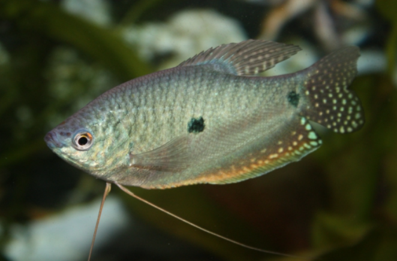

Systématique
- Ordre : Anabantiformes
- Famille : Osphronemidae
- Genre : Trichopodus
- Espèce : T. trichopterus
- Syn. : Trichogaster trichopterus

Trichopodus trichopterus est l'un des gouramis les plus populaires et les plus robustes en aquariophilie.
L'espèce sauvage est gris-argenté avec deux taches noires sur le flanc (plus l'œil, d'où le nom "Gourami à trois points"). Cependant, il est surtout connu pour ses formes d'élevage colorées : le Gourami bleu, le Gourami doré (jaune) et le Gourami cosby (ou opaline, marbré de bleu foncé).
C'est un poisson robuste atteignant 10 à 15 cm. Comme tous les Labyrinthidés, il possède un organe respiratoire auxiliaire (le labyrinthe) lui permettant de piper l'air à la surface. Ses nageoires pelviennes sont transformées en longs filaments tactiles qu'il utilise pour explorer son environnement.
C'est un poisson de surface et de pleine eau, au caractère affirmé. Bien que généralement paisible en bac communautaire spacieux, les mâles peuvent être territoriaux et agressifs entre eux, surtout en période de reproduction.
Il convient de le maintenir soit en couple, soit en harem (un mâle pour plusieurs femelles). Il cohabite bien avec d'autres espèces asiatiques de taille moyenne (Barbus, Rasboras, Loches), mais peut harceler les poissons trop lents ou aux nageoires voilées.
Mode : ovipare (constructeur de nid de bulles).
La reproduction est aisée. Le mâle construit un grand nid de bulles à la surface, souvent parmi les plantes flottantes. Lors de l'accouplement, il enlace la femelle sous le nid.
Une fois la ponte terminée, le mâle chasse la femelle (qui doit être retirée pour sa sécurité) et garde farouchement le nid jusqu'à la nage libre des alevins.
Dimorphisme sexuel : Très facile à identifier chez les adultes. La nageoire dorsale du mâle est longue et pointue, atteignant parfois la queue. Celle de la femelle est plus courte et arrondie.
Espérance de vie : 4 à 6 ans, parfois plus.
Originaire du bassin du Mékong en Asie du Sud-Est (Thaïlande, Laos, Cambodge, Vietnam). Il fréquente les eaux lentes ou stagnantes : marais, canaux, rizières et plaines inondées, souvent dans des milieux pauvres en oxygène et riches en végétation.
Répartition

Origine naturelle :
- Asie du Sud-Est.
- Bassin du Mékong.
- Thaïlande, Laos, Vietnam, Cambodge.
- Malaisie, Indonésie.
Paramètres de maintenance
Température : 24 à 28 °C.
pH : 6,0 à 8,0 (très tolérant).
GH : 5 à 20 °dGH.
Volume conseillé : Minimum 150 à 200 L. En raison de sa taille adulte (jusqu'à 15 cm) et de la territorialité des mâles, un grand volume est nécessaire.
Régime alimentaire
Régime : omnivore.
Dans la nature, il se nourrit d'insectes, de larves, de zooplancton et de débris végétaux.
En aquarium, il n'est pas difficile : paillettes, granulés, nourriture vivante ou congelée. Il apprécie un complément végétal. C'est aussi un prédateur d'hydres et de planaires.